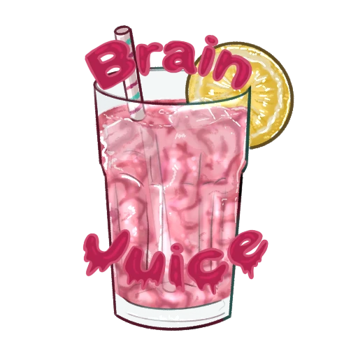
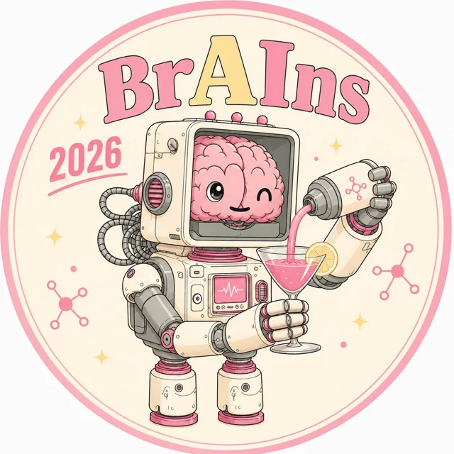

Incontri
Spremute
Scegliamo una domanda, un paper o un tema e lo guardiamo da più discipline insieme. Preferiamo vederci di persona, a volte ci troviamo online.
Per partecipare: seguici sui nostri canali

BrainJuiceSiamo studenti e ricercatori tra neuroscienze e intelligenza artificiale, con percorsi in fisica, psicologia, filosofia, ingegneria e non solo. Discutiamo di scienza sul serio, in un clima informale.
Brains that drink together wire together.Da Hebb (1949), con qualche libertà. Aperti anche ad astemi e curiosi.
Prossimo evento · quarta edizione
Collegare mente e macchine: apprendimento, memoria e adattamento dal cervello all’IA.
I posti in aula sono limitati e vanno in ordine di iscrizione: se l’aula si riempie, si partecipa da remoto. Il link Zoom arriva per mail il giorno prima.

Manda titolo e abstract a brainsjuice.team@gmail.com. Nella mail scrivi se vuoi presentare solo un poster o essere considerato anche per uno dei due talk brevi da 10 minuti.
La call for abstracts si è chiusa il 10 ottobre. Ci vediamo il 30.
brAIns 2026 è realizzato con il supporto di Sapienza (Iniziative culturali e sociali degli studenti) e UDU Sapienza.
Cosa facciamo
Incontri
Scegliamo una domanda, un paper o un tema e lo guardiamo da più discipline insieme. Preferiamo vederci di persona, a volte ci troviamo online.
Per partecipare: seguici sui nostri canali
Divulgazione
Serate aperte a tutti per raccontare la ricerca su cervello e AI, senza dare nulla per scontato.
Ultimo: Caccia AI Nobel, Libreria Tomo, Roma
Evento annuale
Seminari accessibili, talk brevi di studenti e ricercatori e una poster session, per far parlare neuroscienze e AI.
Quarta edizione: 30 ottobre 2026
Dal vivo
Archivio
Talk di Emanuele Rodolà, Francesco Pappone e Bianca Silva, talk partecipativi e poster session.
Passato, presente e futuro dell’AI attraverso i vincitori dei premi Nobel legati all’intelligenza artificiale.
La rappresentazione dell’informazione nel cervello e nell’AI.
A seguire aperitivo sul piazzale di Fisica.
Cristiano Capone, Matteo Negri, Stefano Ferraina e Nicola De Cao su apprendimento, creatività, ragionamento e sogno.
Contatti
C’è qualcosa che ti incuriosisce? Scrivici due righe. Per tutto il resto, l’indirizzo è lo stesso.